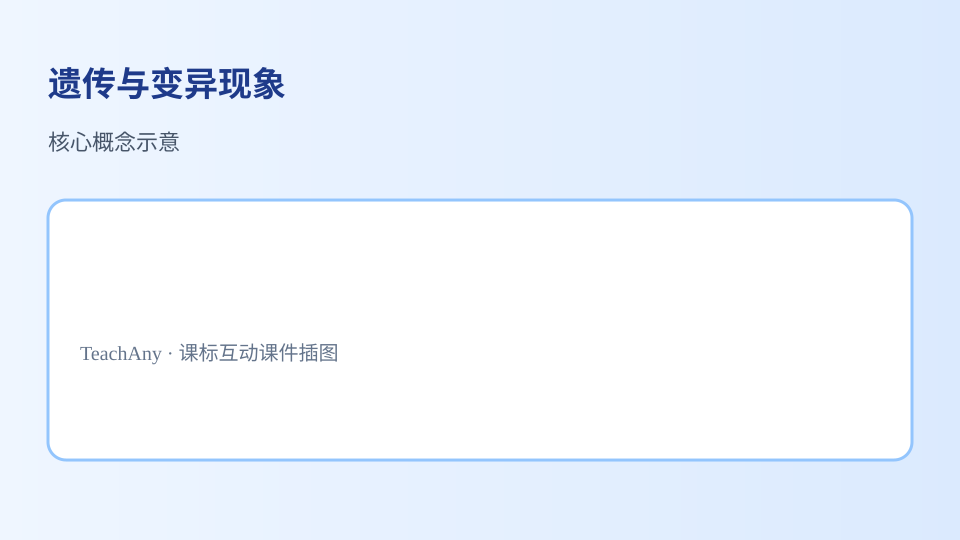

📑 知识图谱 🤝 AI 学伴 📚 课程内容
遗传与变异现象 孩子像父母却有不同——遗传传递性状，变异带来多样性，共同塑造生命的丰富多彩。
遗传延续性状，变异产生差异
能举例说明遗传现象（子代与亲代相似）和变异现象（子代之间存在差异）
能描述性状（如身高、花色、耳垂有无）在亲代与子代间的传递
能初步解释变异是生物多样性和适应环境的基础
能结合实例区分可遗传的性状与环境造成的差异
同一窝小狗毛色略有不同，这主要体现？
变异现象——同代个体间的差异
遗传——与母狗完全一模一样
小狗不会遗传任何性状
先选一个，错了正好暴露你的前概念，我们一起纠正。
生物体的形态特征和生理特性称为性状 ，如豌豆的花色、人的双眼皮、狗的卷毛。亲代通过生殖 把遗传信息传给子代，使子女与父母在诸多性状上相似 ，这就是遗传 。
遗传保证了物种性状的相对稳定，使「种瓜得瓜、种豆得豆」。遗传信息储存在细胞内的遗传物质中（中学将深入学习基因与 DNA）。

亲代性状通过生殖传递给子代
同一父母的孩子也不完全相同；同种植物的花朵颜色、果实大小也有差异——这就是变异 。变异使生物个体千差万别，构成生物多样性 。
有些变异有利于在特定环境中生存（如保护色），通过自然选择 更容易保留；不利变异可能被淘汰。遗传与变异共同作用，推动物种长期适应环境。
变异产生差异，环境选择有利性状
观察不同性状个体在环境变化中的生存差异，理解变异为自然选择提供「原材料」。
💡 切换环境背景色，看哪种性状的个体更容易存活——联系本课「变异+环境=适应」。
把描述卡片拖到遗传（相似） 或变异（差异） 。
👶 孩子像爸爸的单眼皮
👧 双胞胎身高略有不同
🌽 玉米后代仍是玉米
🌻 同片向日葵花盘大小不一
🐕 小狗继承卷毛性状
🐱 同窝小猫毛色花纹不同
拖完 6 项后自动判分。
解释题： 观察你家两代（或三代）人的一个性状（如耳垂、眼皮、发色），哪些体现遗传？哪些体现变异或环境影响？
看看老师的提示 提示：与父母相似倾向遗传；兄弟姐妹不同是变异；晒黑的发色可能主要是环境。
拓展题： 为什么生物多样性有利于生态系统稳定？
关于遗传与变异，正确的是？
遗传使性状代代相传，变异使同种个体存在差异
变异只发生在植物，动物不会变异
遗传和变异互相矛盾，不能同时存在
选一个并查看反馈。
迁移任务： 拍一张家里植物或宠物「父子」对比照，标出 1 个相似性状和 1 个不同性状。
什么是遗传？ 遗传是指生物通过生殖将性状传递给后代的过程。例如，人类父母会将眼睛的颜色、头发的质地等特征遗传给子女。遗传是由基因控制的，基因是决定生物性状的基本单位。以豌豆为例，孟德尔通过豌豆杂交实验发现，豌豆的花色、株高等性状都是由特定的基因控制的。基因位于染色体上，染色体由 DNA 和蛋白质组成。DNA 是遗传信息的载体，它通过复制将遗传信息传递给下一代。遗传信息的传递不仅仅局限于动物和植物，微生物如细菌也通过分裂将遗传信息传递给后代。
什么是变异？ 变异是指生物体在遗传过程中出现的性状差异。变异可以是遗传的，也可以是非遗传的。遗传变异是由于基因突变或基因重组引起的，而非遗传变异则是由于环境因素导致的。例如，同卵双胞胎虽然基因相同，但由于后天生活环境的不同，他们的身高、体重等性状可能会有所差异。变异在生物进化中起着重要作用，它为自然选择提供了原材料。例如，达尔文在研究加拉帕戈斯群岛的雀鸟时发现，不同岛屿上的雀鸟喙的形状和大小有所不同，这些变异使得它们能够适应不同的食物来源。
基因与性状的关系 基因是控制生物性状的基本单位，每个基因对应一个或多个性状。例如，人类的 ABO 血型是由三个等位基因控制的，这三个基因决定了 A、B、O 三种血型。基因通过控制蛋白质的合成来影响性状，蛋白质是生物体结构和功能的基本单位。例如，血红蛋白是一种蛋白质，它负责携带氧气，血红蛋白的基因突变会导致贫血等疾病。基因的表达受环境因素的影响，例如，植物的开花时间不仅受基因控制，还受光照和温度的影响。基因与性状的关系是复杂的，一个性状可能受多个基因控制，一个基因也可能影响多个性状。
染色体的结构与功能 染色体是细胞核中由 DNA 和蛋白质组成的结构，它是基因的载体。人类有 23 对染色体，其中 22 对是常染色体，1 对是性染色体。染色体的结构包括着丝粒、短臂和长臂等部分。染色体的主要功能是储存和传递遗传信息。在细胞分裂过程中，染色体会复制并分配到两个子细胞中，确保遗传信息的连续性。染色体的异常会导致遗传疾病，例如，唐氏综合征是由于第 21 号染色体多了一条引起的。染色体的研究对于理解遗传和变异现象具有重要意义，科学家通过染色体分析可以诊断遗传疾病和进行基因定位。
孟德尔的遗传定律 孟德尔通过豌豆杂交实验提出了遗传的两大定律：分离定律和自由组合定律。分离定律指出，成对的等位基因在形成配子时会分离，每个配子只含有其中一个等位基因。例如，豌豆的花色由一对等位基因控制，红花基因和白花基因在形成配子时会分离。自由组合定律指出，不同对等位基因在形成配子时会自由组合。例如，豌豆的花色和株高由不同的基因控制，它们在形成配子时会自由组合。孟德尔的遗传定律为现代遗传学奠定了基础，科学家通过这些定律可以预测生物的遗传性状和进行育种。
基因突变与遗传疾病 基因突变是指基因序列的改变，它可以是点突变、插入突变或缺失突变。基因突变可以是自发的，也可以是由环境因素如辐射、化学物质引起的。基因突变会导致蛋白质结构和功能的改变，从而引起遗传疾病。例如，镰刀型细胞贫血是由于血红蛋白基因的一个点突变引起的，突变导致血红蛋白分子结构异常，影响红细胞的携氧能力。基因突变并不总是有害的，有些突变可能对生物体有利。例如，抗生素耐药性细菌的产生是由于基因突变使得细菌能够抵抗抗生素的作用。基因突变的研究对于理解遗传疾病的发病机制和开发治疗方法具有重要意义。
环境对遗传的影响 虽然基因决定生物的性状，但环境因素也会影响基因的表达和性状的表现。例如，植物的生长高度不仅受基因控制，还受光照、温度、水分等环境因素的影响。在人类中，营养状况、生活习惯等环境因素也会影响基因的表达。例如，同卵双胞胎虽然基因相同，但由于后天生活环境的不同，他们的健康状况、智力水平等可能会有所差异。环境对遗传的影响是复杂的，它不仅影响个体的性状表现，还可能通过表观遗传机制影响基因的表达。表观遗传是指基因表达的可遗传变化，它不涉及 DNA 序列的改变，而是通过 DNA 甲基化、组蛋白修饰等机制实现的。
遗传与进化的关系 遗传与进化是生物学中的两个重要概念，它们之间有着密切的联系。遗传为进化提供了原材料，变异使得生物体之间存在差异，而这些差异为自然选择提供了基础。例如，达尔文在研究加拉帕戈斯群岛的雀鸟时发现，不同岛屿上的雀鸟喙的形状和大小有所不同，这些变异使得它们能够适应不同的食物来源。自然选择会保留有利的变异，淘汰不利的变异，从而使得生物种群逐渐进化。遗传与进化的关系是复杂的，它不仅涉及基因的传递和变异，还涉及基因的表达和调控。科学家通过研究遗传与进化的关系，可以揭示生物多样性的起源和进化机制。
📋 课前诊断 1. 什么是遗传？2. 什么是变异？3. 基因是如何控制性状的？
✅ 达标检测 1. 孟德尔的遗传定律有哪些？2. 基因突变对生物体有什么影响？3. 环境如何影响基因的表达？
💡 错因诊断 误区：学生常常认为遗传性状完全由基因决定，忽略了环境因素的影响。错因：这种误解源于对基因与环境关系的认识不足。诊断：通过讲解环境对基因表达的影响，帮助学生全面理解遗传与性状的关系。
🚀 迁移挑战 迁移挑战：设计一个实验，探究不同环境因素（如光照、温度）对植物生长高度的影响，并分析实验结果。
🗺️ 知识图谱：遗传与变异现象 — 遗传与变异现象